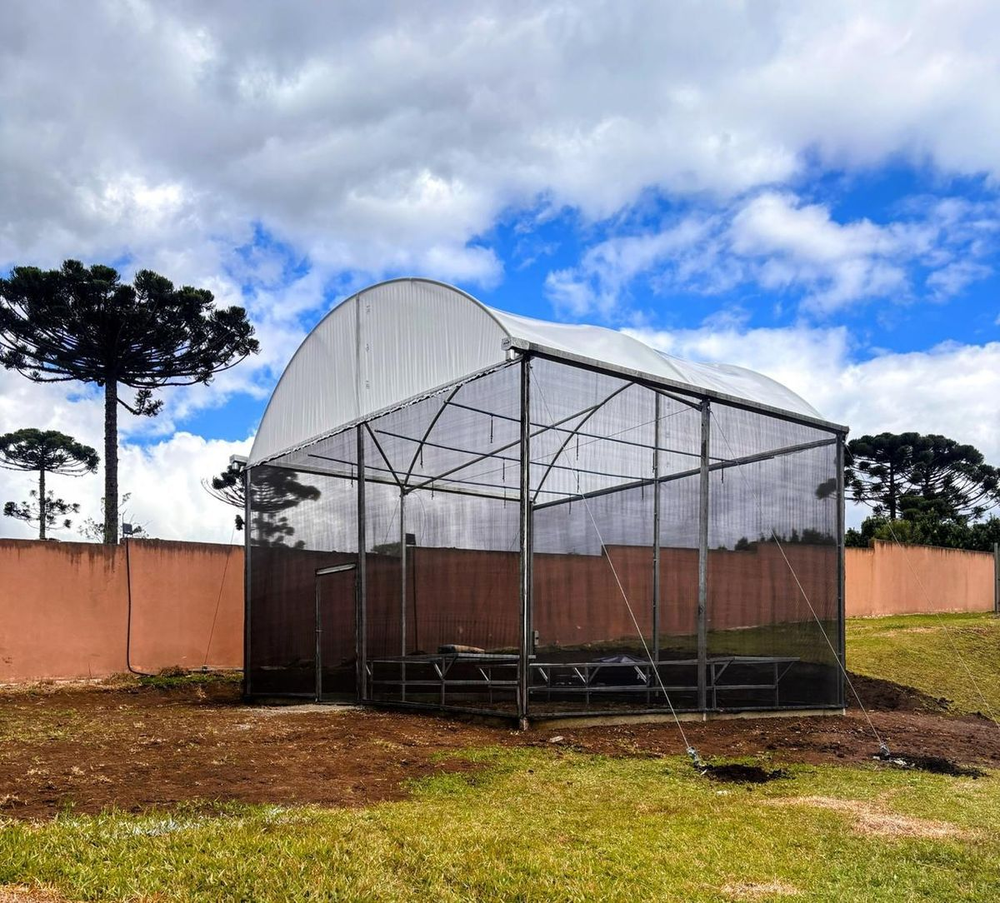
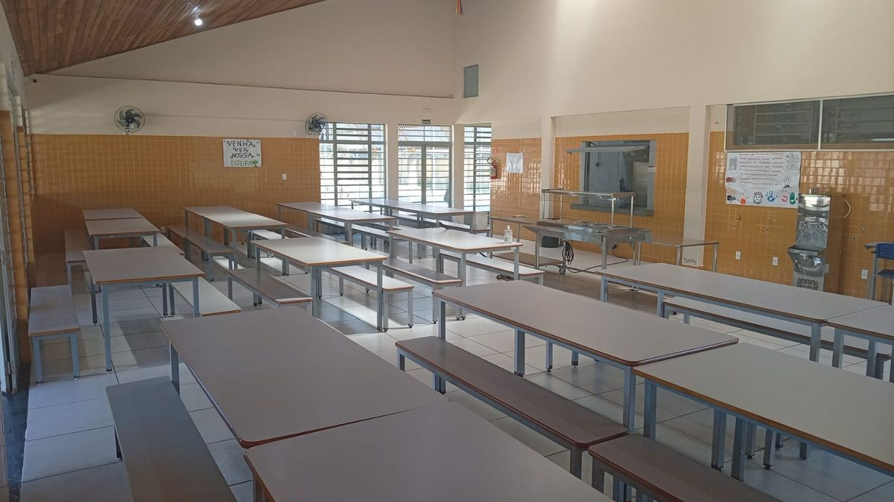
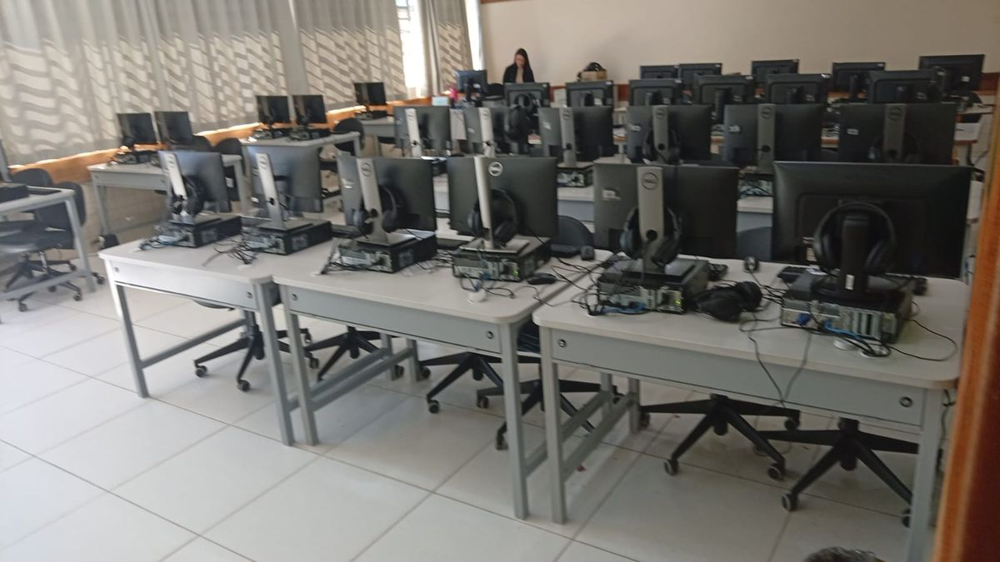

Nossa história
A história do colégio começou em 1999, quando a comunidade da Colônia Malhada pediu à Secretaria Municipal de Educação de São José dos Pinhais duas salas na Escola Rural Municipal Alfredo José Eichel para abrir turmas de 5ª e 6ª séries. No fim daquele ano veio a autorização de funcionamento e, em 2000, começaram as aulas da Escola Estadual Colônia Malhada – Ensino Fundamental.
A escola cresceu ano a ano. Em 2002 já atendia todo o Ensino Fundamental e, a partir de 2004, implantou o Ensino Médio e ganhou laboratório, cozinha e mais livros na biblioteca. Como ainda dividia o prédio com a escola municipal, chegou a usar as salas de catequese da comunidade para acomodar os estudantes, que passaram de 292 em 2006 para 470 em 2011. Em 2012, tornou-se oficialmente uma escola do campo.
Em 2015, a Prefeitura comprou e doou ao Estado o terreno para a nova sede. A obra começou em 2016, passou por várias paralisações, inclusive durante a pandemia, e em 21 de março de 2022 o colégio finalmente se mudou para o prédio novo, na Rua Apolônia Gribosi Guerra, 1750. Foi a realização de um sonho de muitos anos da comunidade: a nova unidade tem oito salas de aula, biblioteca, laboratórios de informática e de química e física, refeitório e quadra esportiva coberta.
Em 2023, o colégio passou a oferecer o Ensino Médio técnico, começando pelo curso de Desenvolvimento de Sistemas, e em 2024 chegou o Técnico em Agronegócio. Hoje recebe estudantes de comunidades como Malhada, Roça Velha, Saltinho da Malhada, Campestre, Olho D’água, Antinha, Inhaiva e Contenda.
Missão
Oferecer uma educação pública de qualidade que forme o estudante por inteiro, no aspecto intelectual, social e emocional, preparando-o para exercer a cidadania e para o mundo do trabalho.
Visão
Ser uma escola onde todos os estudantes permaneçam, frequentem as aulas e aprendam com qualidade, contribuindo para uma sociedade mais justa e igualitária.
Valores
Democracia, justiça, igualdade, solidariedade e participação da comunidade.


